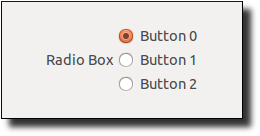

| ||
superclass: object% | ||
|
A radio-box% control allows the user to select one of a number of mutually exclusive items. The items are displayed as a vertical column or horizontal row of labelled radio buttons. Unlike a list-control<%>, the set of items in a radio-box% cannot be changed dynamically.
Whenever the user changes the selected radio button, the radio box’s callback procedure is invoked. A callback procedure is provided as an initialization argument when each radio box is created.
constructor
(new radio-box% [label label] [choices choices] [parent parent] [ [callback callback] [style style] [selection selection] [font font] [enabled enabled] [vert-margin vert-margin] [horiz-margin horiz-margin] [min-width min-width] [min-height min-height] [stretchable-width stretchable-width] [stretchable-height stretchable-height]]) → (is-a?/c radio-box%) label : (or/c label-string? #f) choices : (or/c (listof label-string?) (listof (is-a?/c bitmap%)))
parent :
(or/c (is-a?/c frame%) (is-a?/c dialog%) (is-a?/c panel%) (is-a?/c pane%))
callback :
((is-a?/c radio-box%) (is-a?/c control-event%) . -> . any) = (lambda (r e) (void))
style :
(listof (or/c 'horizontal 'vertical 'vertical-label 'horizontal-label 'deleted)) = '(vertical) selection : (or/c exact-nonnegative-integer? #f) = 0 font : (is-a?/c font%) = normal-control-font enabled : any/c = #t vert-margin : (integer-in 0 1000) = 2 horiz-margin : (integer-in 0 1000) = 2 min-width : (integer-in 0 10000) = graphical-minimum-width min-height : (integer-in 0 10000) = graphical-minimum-height stretchable-width : any/c = #f stretchable-height : any/c = #f
If & occurs in label, it is specially parsed as for button%.
Each string in choices can also contain a &, which creates a mnemonic for clicking the corresponding radio button. As for label, a && is converted to a &.
If choices is a list of bitmaps, and if a bitmap has a mask (see get-loaded-mask in bitmap%) that is the same size as the bitmap, then the mask is used for the label. Modifying a bitmap while it is used as a label has an unspecified effect on the displayed label.
If label is a string, it is used as the label for the radio box. Otherwise, the radio box does not display its label.
The callback procedure is called (with the event type 'radio-box) when the user changes the radio button selection.
The style argument must include either 'vertical for a collection of radio buttons vertically arranged, or 'horizontal for a horizontal arrangement. If style includes 'vertical-label, then the radio box is created with a label above the control; if style does not include 'vertical-label (and optionally includes 'horizontal-label), then the label is created to the left of the radio box. If style includes 'deleted, then the radio box is created as hidden, and it does not affect its parent’s geometry; the radio box can be made active later by calling parent’s add-child method.
By default, the first radio button is initially selected. If selection is positive or #f, it is passed to set-selection to set the initial radio button selection.
The font argument determines the font for the control. For information about the enabled argument, see window<%>. For information about the horiz-margin and vert-margin arguments, see subarea<%>. For information about the min-width, min-height, stretchable-width, and stretchable-height arguments, see area<%>.
method
enable? : any/c (send a-radio-box enable n enable?) → void? n : exact-nonnegative-integer? enable? : any/c
If two arguments are provided, then if enable? is #f, the nth radio button is disabled, otherwise it is enabled (assuming the entire radio box is enabled). Radio buttons are numbered from 0. If n is equal to or larger than the number of radio buttons in the radio box, an exn:fail:contract exception is raised.
method
(send a-radio-box get-item-label n) → string?
n : exact-nonnegative-integer?
method
(send a-radio-box get-item-plain-label n) → string?
n : exact-nonnegative-integer?
method
(send a-radio-box get-number) → exact-nonnegative-integer?
method
(send a-radio-box get-selection)
→ (or/c exact-nonnegative-integer? #f)
method
(send a-radio-box is-enabled?) → boolean?
(send a-radio-box is-enabled? n) → boolean? n : exact-nonnegative-integer?
Otherwise, returns #f if nth radio button is disabled (independent of disabling the entire radio box), #t otherwise. Radio buttons are numbered from 0. If n is equal to or larger than the number of radio buttons in the radio box, an exn:fail:contract exception is raised.
method
(send a-radio-box set-selection n) → void?
n : (or/c exact-nonnegative-integer? #f)